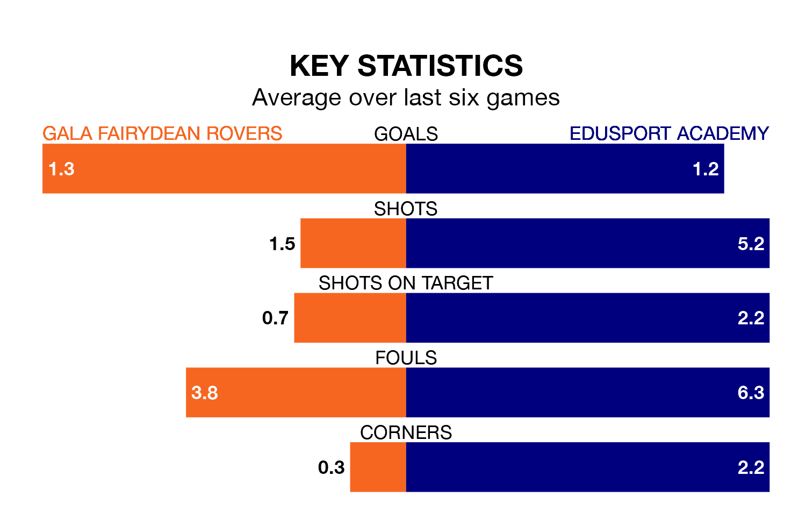

Gala Fairydean Rovers are on a poor run ahead of hosting Edusport Academy at the Netherdale Football Ground on Saturday, with just four points collected from their last six games.
Gala Fairydean have picked up one win and one draw in their last six Lowland Football League games, and face a Braves side whose last six games have brought two wins and one draw.
Gala Fairydean are 16th in the table after 32 games, of which they have won nine and drawn five, earning 32 points.
Edusport Academy are three places ahead of Rovers in 13th, with 10 wins and nine draws putting them on 39 points.
In the last 10 years, Gala Fairydean and Edusport Academy have played each other on 10 occasions. Gala Fairydean won three of them, Edusport Academy two, and they drew five times.
On average, Gala Fairydean scored 1.9 goals and the Braves 1.7 in those matches.
Their last meeting was on October 7, when Edusport Academy won 2-1 at home.
With 41 goals in 32 games so far this season, the Braves are scoring at below the league average rate with 1.3 goals per game. But they are conceding fewer than average too, letting in 38 goals at a rate of 1.2 per game.
The hosts are also below average scorers, with 1.3 goals per game, compared to a league average of 1.7. They have conceded 2.6 goals per game.
Gala Fairydean's last match was on April 6, a 0-0 draw against Gretna 2008.
Edusport Academy beat Edinburgh University 4-0 last time out, also on April 6.
Updated: 14:47 (UTC), 09/04/24